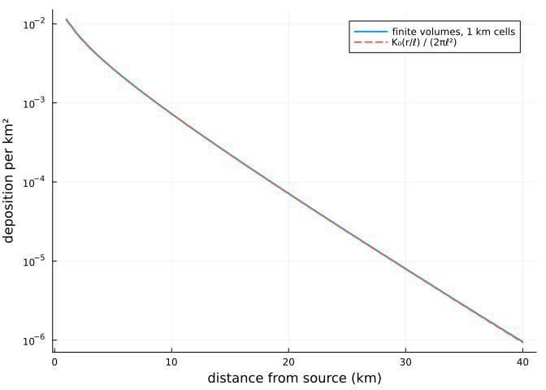
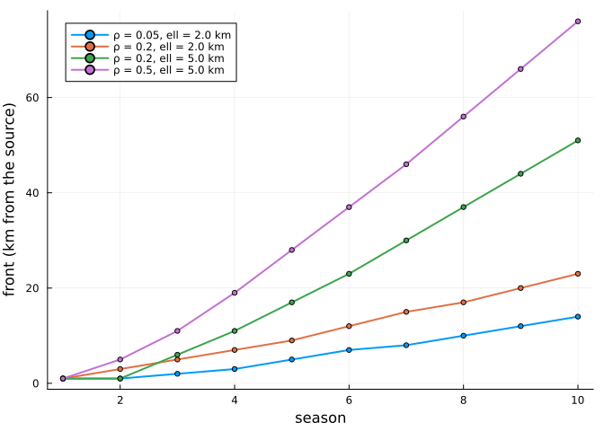
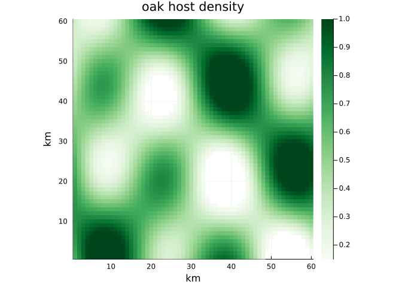
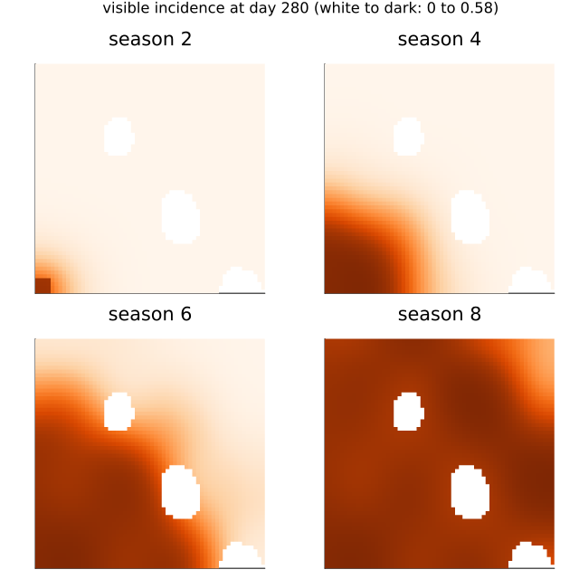
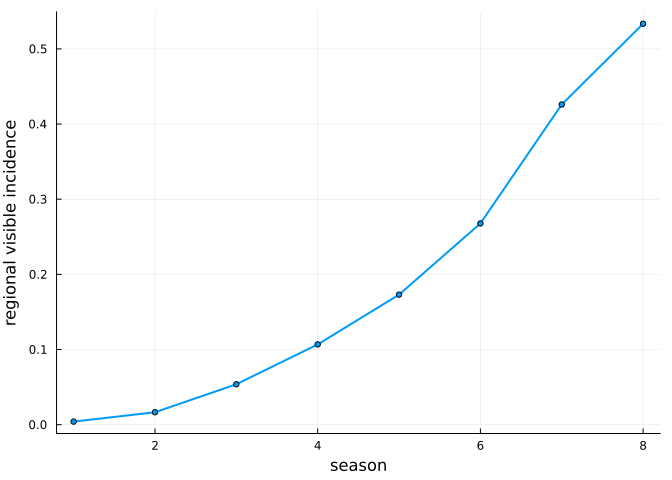

Spread: two-scale dispersal
Simon Frost
- Overview
- Setup
- The model
- The dispersal field
- A uniform landscape is the single-stand model
- A front along a strip
- A patchy landscape
- Next steps
Overview
Erysiphe alphitoides was first reported on European oaks in 1907 and within a few years was recorded across the continent. Spread at that pace needs some conidia to travel far, even though most infect leaves in the canopy that produced them. The spatial model keeps both scales. Every grid cell with oak runs the leaf-level model of the previous vignette; a share 1 − ρ of the conidia a stand produces stays in the stand, and the share ρ escapes and is carried across the landscape over a typical distance ℓ.
This vignette shows the dispersal field, how the coupled model reduces to the single-stand one, and how the speed of a front depends on ρ and ℓ and on the woodland it crosses. All parameter values are illustrative, not fitted.
Setup
using PowderyMildew
using Plots
using PrintfThe model
Airborne conidia survive for days at most, much less than the time an epidemic takes to move, so the airborne field is quasi-steady. With H the host density of each cell (its oak leaf area relative to a fully stocked cell) and I its share of sporulating leaves, the field φ of escaping conidia solves the screened Poisson equation with no flux across the edge of the map,
\[(1 - \ell^2 \Delta)\, \varphi = H I,\]
and the conidial pressure on the leaves of cell i, which multiplies b_c in the force of infection, is
\[(1 - \rho)\, I_i + \rho\, \varphi_i .\]
Primary inoculum, from chasmothecia, stays in its cell. In the plane, the field from a point source is the kernel K₀(r/ℓ)/(2πℓ²), with K₀ the modified Bessel function: logarithmic near the source and exponential beyond ℓ. dispersal_field solves the discretised equation, by finite volumes with one sparse Cholesky factorisation per solve.
The dispersal field
A unit source in the middle of a 101 × 101 km grid, with ℓ = 5 km, against the kernel in the plane:
besselk0(x; T = 8.0, n = 4000) = (h = T / n; h * (exp(-x) / 2 + sum(exp(-x * cosh(k * h)) for k in 1:n)))
ell = 5.0
land = Landscape(ones(101, 101); cellsize = 1.0)
source = zeros(101, 101)
source[51, 51] = 1.0
φ = dispersal_field(land, ell, source)
r = 1:40
plot(r, φ[51 .+ r, 51]; yscale = :log10, lw = 2, label = "finite volumes, 1 km cells",
xlabel = "distance from source (km)", ylabel = "deposition per km²")
plot!(r, besselk0.(r ./ ell) ./ (2π * ell^2); ls = :dash, lw = 2, label = "K₀(r/ℓ) / (2πℓ²)")
@printf("deposited on the grid: %.12f of the source\n", sum(φ))deposited on the grid: 1.000000000000 of the sourceThe field conserves spores and matches the kernel once the cells are small next to ℓ.
A uniform landscape is the single-stand model
The field leaves a uniform source unchanged, so in a landscape of uniform host density H the conidial pressure is (1 − ρ + ρH) I: the spatial model is the single-stand model with b_c reduced by the factor 1 − ρ + ρH, whatever ℓ. A stand in sparse woodland loses the escaping conidia and receives fewer from its neighbours. It follows that ρ and ℓ can only be identified from spatial contrasts: a moving front, or stands in sparse against dense woodland.
p = MildewParameters(; b_c = 0.25, b_a = 0.5, tau_s = 20, K = 3, epsilon = 0.05, latent = 8, L = 3,
gamma_I = 0.05, c_w = 2.0)
release = ReleaseHazard(; rate = 0.2, optimum = 140, curvature = -0.003)
season = SeasonForcing(; tspan = (90, 280), production = FlushProduction([120, 190], [5, 8], [0.8, 0.2]),
release, gate = t -> t > 240 ? 1.0 : 0.0, tstops = [240.0])
rho = 0.3
for H in (1.0, 0.5, 0.2)
spatial = solve(SpatialMildewProblem(p, Landscape(fill(H, 5, 5); cellsize = 1.0), Dispersal(; rho, ell = 3.0),
fill(season, 6), 0.1))
q = MildewParameters(; b_c = p.b_c * (1 - rho + rho * H), b_a = 0.5, tau_s = 20, K = 3, epsilon = 0.05,
latent = 8, L = 3, gamma_I = 0.05, c_w = 2.0)
single = solve(MildewProblem(q, fill(season, 6), 0.1))
@printf("H = %.1f: regional visible incidence in season 6, spatial %.4f, single stand %.4f\n", H,
regional_incidence(spatial, 6, 280.0; visible = true), visible_incidence(single, 6, 280.0))
endH = 1.0: regional visible incidence in season 6, spatial 0.1995, single stand 0.1995
H = 0.5: regional visible incidence in season 6, spatial 0.0597, single stand 0.0597
H = 0.2: regional visible incidence in season 6, spatial 0.0177, single stand 0.0177A front along a strip
A strip of woodland 200 km long, 1 km wide and fully stocked, with inoculum only in its first kilometre. The front is the farthest cell whose visible incidence at the end of the season exceeds 5 %.
strip = Landscape(ones(200, 1); cellsize = 1.0)
C0 = [1.0; zeros(199)]
nseason = 10
front(s) = [something(findlast(>(0.05), visible_incidence(s, k, 280.0)), 0) for k in 1:nseason]
cases = [(0.05, 2.0), (0.2, 2.0), (0.2, 5.0), (0.5, 5.0)]
fronts = map(cases) do (rho, ell)
front(solve(SpatialMildewProblem(p, strip, Dispersal(; rho, ell), fill(season, nseason), C0);
abstol = 1e-9, reltol = 1e-7))
end
plt = plot(; xlabel = "season", ylabel = "front (km from the source)", legend = :topleft)
for ((rho, ell), f) in zip(cases, fronts)
plot!(plt, 1:nseason, f; lw = 2, marker = :circle, ms = 3, label = "ρ = $rho, ell = $ell km")
end
plt
After a season or two of establishment the front moves at a constant speed, which grows with both the share of conidia that escape and the distance they travel:
println(" ρ ell (km) speed (km per year)")
for rho in (0.05, 0.1, 0.2, 0.5), ell in (1.0, 2.0, 4.0, 8.0)
f = front(solve(SpatialMildewProblem(p, strip, Dispersal(; rho, ell), fill(season, nseason), C0);
abstol = 1e-9, reltol = 1e-7))
@printf("%5.2f %6.1f %6.2f\n", rho, ell, (f[nseason] - f[nseason - 4]) / 4)
end ρ ell (km) speed (km per year)
0.05 1.0 1.00
0.05 2.0 1.75
0.05 4.0 3.75
0.05 8.0 7.50
0.10 1.0 1.25
0.10 2.0 2.25
0.10 4.0 4.50
0.10 8.0 9.00
0.20 1.0 1.25
0.20 2.0 2.75
0.20 4.0 5.50
0.20 8.0 11.00
0.50 1.0 2.00
0.50 2.0 3.75
0.50 4.0 7.75
0.50 8.0 16.00The speed is close to proportional to ℓ and rises more slowly with ρ: doubling ℓ doubles it, while a tenfold rise in ρ only about doubles it. Fronts of 1 to 16 km a year are far slower than the spread across Europe after 1907, which needs ℓ of tens of kilometres, or a kernel with a fatter tail than the exponential one here. The historical spread, recorded in herbarium specimens (Gross et al. 2021), is the data that can separate those.
A patchy landscape
Woodland is not uniform. On a 60 × 60 km landscape of patchy oak, with inoculum seeded in one corner:
nx = ny = 60
host = [clamp(0.55 + 0.45sin(i / 5) * cos(j / 7) + 0.25sin((i + j) / 11), 0, 1) for i in 1:nx, j in 1:ny]
host[host .< 0.15] .= 0.0
patchy = Landscape(host; cellsize = 1.0)
seed = [(i ≤ 4 && j ≤ 4) ? 1.0 : 0.0 for i in 1:nx, j in 1:ny][patchy.active]
heatmap(1:nx, 1:ny, gridded(patchy, host[patchy.active])'; c = :Greens, aspect_ratio = 1,
xlabel = "km", ylabel = "km", title = "oak host density", xlims = (0.5, nx + 0.5), ylims = (0.5, ny + 0.5))
Escaping conidia are a cost as well as a means of spread: those that land on open ground are lost, so in sparse woodland a larger ρ lowers local transmission. For the pathogen used so far, and for a more vigorous one (bc = 0.35, cw = 4), the regional visible incidence after 12 seasons:
vigorous = MildewParameters(; b_c = 0.35, b_a = 0.5, tau_s = 20, K = 3, epsilon = 0.05, latent = 8, L = 3,
gamma_I = 0.05, c_w = 4.0)
println("pathogen ρ ell (km) regional visible incidence, season 12")
for (name, q) in (("as above", p), ("vigorous", vigorous)), (rho, ell) in ((0.2, 4.0), (0.5, 4.0), (0.5, 8.0))
s = solve(SpatialMildewProblem(q, patchy, Dispersal(; rho, ell), fill(season, 12), seed);
abstol = 1e-8, reltol = 1e-6)
@printf("%-9s %.1f %4.1f %.3f\n", name, rho, ell, regional_incidence(s, 12, 280.0; visible = true))
endpathogen ρ ell (km) regional visible incidence, season 12
as above 0.2 4.0 0.029
as above 0.5 4.0 0.012
as above 0.5 8.0 0.005
vigorous 0.2 4.0 0.546
vigorous 0.5 4.0 0.475
vigorous 0.5 8.0 0.463The pathogen of the earlier sections barely persists in this landscape, whose mean host density is about one half, and the more of its conidia escape, the less it persists. The vigorous one invades whatever ρ and ℓ, and its front, seasons 2 to 8:
nseason2 = 8
spread = solve(SpatialMildewProblem(vigorous, patchy, Dispersal(; rho = 0.2, ell = 4.0), fill(season, nseason2),
seed); abstol = 1e-8, reltol = 1e-6)
top = maximum(maximum(visible_incidence(spread, s, 280.0)) for s in 1:nseason2)
maps = [heatmap(1:nx, 1:ny, gridded(patchy, visible_incidence(spread, s, 280.0))'; c = :Oranges,
clims = (0, top), aspect_ratio = 1, title = "season $s", colorbar = false,
xlims = (0.5, nx + 0.5), ylims = (0.5, ny + 0.5), ticks = false)
for s in (2, 4, 6, 8)]
plot(maps...; layout = (2, 2), size = (640, 640),
plot_title = @sprintf("visible incidence at day 280 (white to dark: 0 to %.2f)", top), plot_titlefontsize = 11)
The front runs fastest through dense woodland and is slowed by sparse woodland and gaps, and sparse stands stay less diseased once it has passed, because they lose more of their own conidia to the open land around them than they receive.
plot(1:nseason2, [regional_incidence(spread, s, 280.0; visible = true) for s in 1:nseason2]; lw = 2,
marker = :circle, ms = 3, label = nothing, xlabel = "season", ylabel = "regional visible incidence")
Next steps
The model’s spread speed and severity are both set by ρ, ℓ and the single-stand parameters, so they must be fitted together: the within-season series (Barrès et al. 2024) for timing and severity, and the historical front for ρ and ℓ. For Great Britain, the host grid will come from the Copernicus tree-cover layers and the National Forest Inventory’s oak shares, and the forcing from HadUK-Grid daily weather.